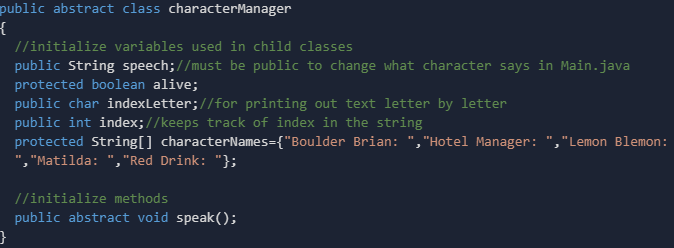

{kind=link}
Welcome to the Palm Treechery Help Page!
On this page, you will find information on how the game is played and how it has been coded using our skills in Java.
How to Play
The premise of this game is that you, the player, are stuck on an island where a volcano is about to erupt. However, there has been a murder on the island. By joining forces with the other 4 people on the island, you must inspect various locations across the island and weed out the murderer so that you and the rest of the survivors can escape successfully. Will you be able to find the killer and escape successfully? Or will you be left behind on the island, left to perish?...
Controls
Keyboard - Used to provide input to the game to progress the story and to play the game itself
Mouse - Used to scroll up in the console in order to view previous encounters and dialogue
Screenshots

As soon as you click RUN to start the game, you are thrust into the world of Palm Treechery. You are welcomed to Palm Island and are asked to input your name into the console. Use your keyboard to enter your name. As soon as it is entered into the console and submitted, you are immediately put into the story of Palm Treechery and are immersed in the beautiful world of this text-based adventure.

This image shows the different variations of text present within this game. The white text represents lines spoken by the character in question. In this case, that would be Red Drink. The green text showcases sentences that are spoken by the Narrator of the game. These lines do not directly impact the game in itself. Finally, the blue text represents lines in the game that are not spoken directly by the characters, however, it is spoken by objects around them. In this case, the lines in blue are spoken by someone on the TV.

This screenshot shows one of three clue inspection areas present within this game. It is through these areas that you are able to inspect the setting of the game for clues to help you to narrow down the list of suspects. In this scene, you are given the option to inspect three things. The Hotel Manager's body, the red liquid on the floor or the scratches on the meat in the meat locker. Which of these leads to the murderer? It is up to you to find out...

After all three areas have been thoroughly inspected, the trial process will begin. All survivors will come together to finally root out the killer. However, you are the one required to determine who the murderer is. If you successfully root them out, a second trial will ensue to finally bring the murderer to justice by leaving them on the island while the rest of the people on the island will escape. Keep in mind, if you choose the wrong person and convict them as the murderer, you will be killed by the murderer and they will escape on the private jet.
OOP Integration
In this section, we will cover how the various aspects of Object Oriented Programming (OOP) in Java has been applied to our game. Through our learnings in Java, we have learned many concepts such as polymorphism, encapsulation and inheritance and were asked to apply those learnings to this final project.

This is an example of encapsulation that we have adapted into our code. Here, we have a protected array of Strings as well as a protected boolean alive. This access modifier prevents other classes other than child classes from accessing the variable and changing it.

This child class, as well as all of the other character child classes, inherit the characterManager. This allows for the variables and the methods in the parent class to be accessed by the child class, as well as any other classes, all depending on the access modifier that the specific variable or object has.

Within the Main class of our game, we have various instances of the Polymorphism "dot notation" present within our game. In this screenshot, it is used by the matilda and boulderBrian objects to access the speech and the speak methods.

Here, you can see both static class members as well as instance variables. Since there is only one copy of that member that is created and is used by all objects within that class as well as any other classes that can access it, these objects can be used as static class members. Furthermore, although it is not visible within this screenshot, each one of these objects is created outside of any blocks, methods or constructors, thus causing them to be instance variables. Finally, each one of these objects has the public access modifier, allowing it to be accessed by any class within the project. Throughout our code as well as throughout other screenshots, two other access modifiers are visible. The protected access modifier is given to objects that do not wish for other classes to access it. However, children of this class would be able to access this object. Think of it like a middle ground between public and private. The private access modifier is given to objects that do not need to be accessed by any other class outside of the one it is in. Similar to the protected access modifier, it can still be accessed. However, it can only be accessed by other objects or methods that happen to be in the same class.

There are two things related to OOP present within this screenshot. Firstly, the keyword final is present in this class, as well as any other character/child classes within our code. This is applied to represent that the name of each of the characters is a constant variable and it cannot be changed. The other thing that is present here is immutable objects. The word immutable means that the object in question cannot be altered once it has been instantiated.

Within all of the child/character classes in our code, there are two versions of the speak() function present. The first one is present so that the dialgoue that was assigned within the Main class can be sent to the console along with the appropriate name that is asssociated with that character and class. At the end, after everything has been printing, a line break is printed to give space to the next line that is printed to the console. The second function is a method with a parameter, allowing us to check within the code if the character within question is either dead or alive. If this function is called and the parameter has been set to false, the line that was assigned to that particular character in that scenario will not be outputted to the console.
Finally, the last thing that we adapted from our learnings of OOP during this semester is abstract classes. This class allows each of its children (ie. the character classes) to access its functions. This is particularly useful as abstract classes cannot be instantiated, meaning that new instances of the class cannot be created, thus allowing it to act as the perfect parent to each of the children classes that inherit it. Finally, the abstract method speak() is created in this class. The purpose of this function, as stated in the previous paragraph, is to allow characters to say certain sentences depending on the situation that they are in and output it to the console. There is no implementation required for these methods, however, you must make sure that when you are inhertiting or extending this class, you must use this method inside of it, otherwise the code will not work.